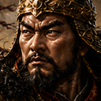
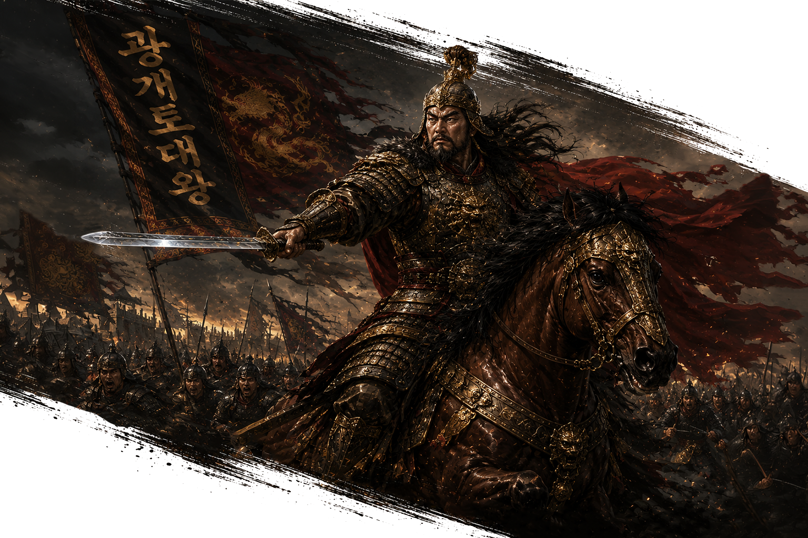
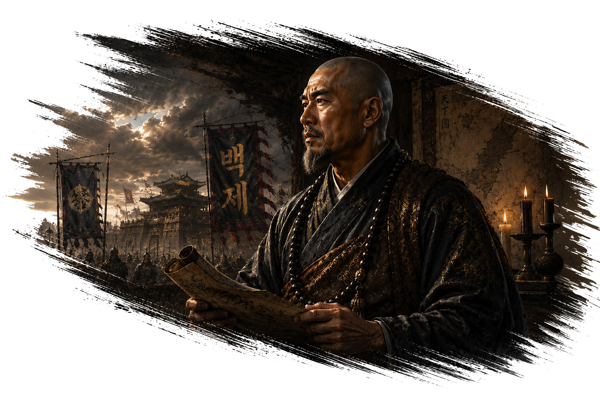
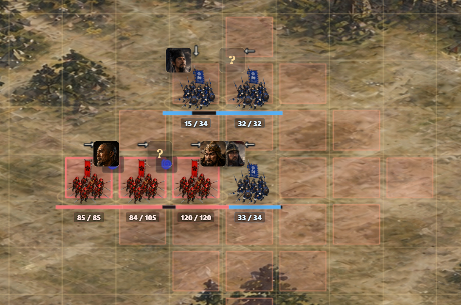

전장이 살아있다
고구려가 일어서고, 전투가 숨을 쉬다
2026년 5월 7일 — 5월 8일고구려, 전장에 서다
v0.3-5a ~ v0.3-5b — 2026.05.07EASTWAR는 한국·중국·일본의 영웅들이 동아시아를 무대로 싸우는 게임이다. 조선의 이순신·정도전, 일본의 노부나가·겐신, 한(漢)의 관우·장비가 자리를 잡은 뒤 — 이제 평양에 고구려 세력이 들어설 차례였다.
v0.3-5a에서 광개토대왕과 도림을 평양에 배치했다. 두 영웅의 캐릭터 설계부터 흥미로웠다. 광개토대왕의 고유특기 영락대업은 전체 아군의 공격력을 2턴간 20% 끌어올리는 버프형 스킬. 도림의 흑백이간은 선택한 적과 주변 적 한 명에게 약한 피해를 주면서 혼란·동요 판정을 거는 책략형 스킬이다. 싸움꾼이 아니라 전략가 — 도림은 그런 장수다.

v0.3-5b에서 두 영웅의 고유특기를 실제 전투에서 발동시켰다. 초상화와 고유특기 컷인 이미지도 함께 삽입했다. 콘솔 에러 없이 효과가 정상 발동되는 걸 확인했을 때 — 동아시아 지도 위에 세 번째 세력이 완전히 살아난 순간이었다.


AI가 싸우지 않는 문제
v0.3-5c ~ v0.3-5e — 2026.05.07그런데 문제가 생겼다. 광개토대왕과 도림, 두 영웅 모두 버프·책략형 장수다 보니, 자동전투 AI가 이상하게 돌아갔다. 스킬을 쓸 수 없는 턴이거나 이미 버프가 걸려 있으면, 그냥 제자리에서 대기만 반복하는 것이었다. 전투가 안 끝났다.
v0.3-5c~e 패치에서 AI 행동 원칙을 다시 잡았다. 스킬을 못 쓰는 상황이거나 쓸 대상이 없으면, 반드시 적에게 접근하거나 기본 공격을 시도하도록 만들었다. 근접전이 유리한 영웅은 붙어서 싸우고, 고유특기가 강한 영웅은 스킬을 우선 쓰도록 분기도 나눴다. 이순신이 공격 없이 계속 대기만 타던 버그도 이 패치에서 함께 잡았다.
AI가 싸우지 않으면 게임이 아니다. 당연한 말인데, 당연하게 만드는 게 제일 어렵다.
전투가 말을 걸기 시작했다 — 상태 아이콘과 컷인 대사
v0.3-6a ~ v0.3-6i — 2026.05.07전투 시스템 안에서 혼란, 동요, 버프 같은 상태 효과들이 쌓이고 있었는데, 플레이어가 이걸 한눈에 볼 방법이 없었다. v0.3-6a~d에서 상태 아이콘을 붙였다. 이미지 대신 기호로 먼저 — 혼란은 🌀, 동요는 ⚠, 공격력 상승은 ▲, 방어력 상승은 ◆ 식으로. 화상·중독·기절·도발·속박까지 미리 설계해서 코드에 심어뒀다. 나중에 쓸 자리를 미리 만들어두는 것이다.
v0.3-6e~f에서는 전투 결과 연출을 강화했다. 승리는 금빛, 패배는 어두운 적갈색 — 배경 박스 없이 약한 그림자만 얹은 글자가 전투판 중앙 위에 크게 뜬다. 그리고 고유특기 컷인에 스킬명이 함께 표시되도록 했다.
v0.3-6g~i가 진짜 하이라이트였다. 컷인에 장수의 대사를 넣은 것이다.
단순한 스킬 정보 표시가 아니다. 장수가 고유특기를 쓰는 순간, 직접 한마디를 갈긴다.
광개토대왕이 영락대업을 발동하면 — "전군이여! 나를 믿고 따르라!"
도림이 흑백이간을 쓰면 — "내 비책! 서로를 죽일 것이다!"
장비가 장판파열을 터트리면 — "음하하~ 내 고함 한 방에 쩔쩔들 매는군!"
나중에 SFX와 보이스가 붙으면 이 대사들이 실제로 들릴 것이다. 지금은 눈으로만 읽히지만, 구조는 이미 거기까지 열려 있다.
2.5D를 향한 기초공사
v0.3-7a ~ v0.3-7f — 2026.05.07기능을 쌓는 것과 구조를 다지는 것은 다른 일이다. v0.3-7 시리즈는 후자였다.
v0.3-7a에서 그리드 좌표와 화면 좌표 변환을 gridToScreen() 함수 하나로 통일했다. 지금은 평면 전장이지만, 나중에 쿼터뷰나 2.5D 투영으로 바뀌더라도 이 함수 하나만 수정하면 전체 화면이 따라온다. 전투 로직, AI, 스킬은 단 한 줄도 건드리지 않았다.
v0.3-7b에서 렌더링 레이어를 분리했다. 지형, 유닛, 이펙트, UI가 각자의 레이어에서 그려진다. v0.3-7c에서는 산·강·숲·다리·성벽 같은 지형 데이터 구조를 심었다. 아직 전투 규칙에 연결되진 않았지만, 자리는 만들어뒀다.
v0.3-7d~f에서는 전투 연출 흐름을 점검하고, 데미지 숫자 가독성을 높이고, 피격 시 유닛이 살짝 뒤로 밀렸다가 돌아오는 넉백 반응을 넣었다. 작은 디테일인데, 전투가 훨씬 살아있는 느낌이 됐다.

지금 만드는 전투 화면은 최종 2.5D가 올라탈 뼈대다. 다 뜯는 게 아니라, 어댑터만 바꾸는 날을 위해.
출전 무장 선택 — 전략이 시작되다
v0.4-0 ~ v0.4-0b — 2026.05.07지금까지는 침공 버튼을 누르면 바로 전투로 넘어갔다. v0.4-0에서 그 사이에 한 단계를 끼워 넣었다. 출전 무장 선택이다. 침공을 클릭하면 내 도시에 주둔한 장수들이 표시되고, 그 중 누구를 데려갈지 선택한 뒤 전투가 시작된다. 1명만 선택해도 전투는 정상 진행된다.
별거 아닌 것 같지만, 이 한 단계가 나중에 병력·피로도·부상·주둔 시스템의 기반이 된다. 게임의 뼈대가 하나 더 자리를 잡았다.
적장을 내 편으로 — 영웅 포섭 시스템
v0.4-1 ~ v0.4-2c — 2026.05.085월 8일, 게임에서 가장 재미있는 순간 중 하나를 구현했다. 적 도시를 점령했을 때, 그 도시에 있던 적장이 내 편으로 넘어오는 것이다.
v0.4-1에서 MVP를 구현했다. 낙양을 점령하면 관우와 장비가 플레이어 소속으로 편입된다. 다음 전투의 출전 후보 명단에 그들이 뜬다. 적이었던 장수가 내 군단에 합류하는 순간 — 전략 게임의 핵심 재미가 처음으로 살아났다.
v0.4-2에서는 이 시스템의 뿌리를 제대로 설계했다. 지금까지는 도시 소유권, 영웅 소속, 전투가 각각 따로 놀았다. 이제는 도시 소유권 ↔ 주둔 영웅 ↔ 출전 후보 ↔ 점령 후 영웅 이동이 하나로 묶인다. 장수에게 locationCityId가 생겼다. 어느 도시에 있는지를 게임이 추적하기 시작한 것이다.
v0.4-2a~b에서는 정보창 버그도 잡았다. 정도전의 버프 정보가 광개토대왕에게 표시되는 황당한 오류였는데, 버프 소스를 영웅별로 저장하도록 구조를 바꿔서 해결했다. v0.4-2c에서는 전투 화면의 좌우 배치도 잡았다. 공격 출발 도시가 목표 도시보다 오른쪽이면 공격군이 우측에서, 왼쪽이면 좌측에서 출발한다. 지도와 전투 화면이 이제 일관된 방향감을 가진다.
장수를 움직이고, 내정을 엿보다
v0.4-3 ~ v0.5-0a — 2026.05.08v0.4-3에서는 장수 재배치 시스템을 넣었다. 내가 소유한 도시 사이에서 장수를 자유롭게 이동시킬 수 있다. 중앙 모달에서 선택하면 끝. v0.4-3a에서는 HUD 정보창에 각 도시에 주둔 중인 영웅의 얼굴이 표시된다. 지도를 보면서 내 장수들이 어디에 있는지 한눈에 파악할 수 있게 됐다.
그리고 v0.5-0a — 내정 패널이 처음으로 모습을 드러냈다. 월드맵에 재정 관련 디스플레이 패널이 붙었다. 도시별 자원과 수치가 숫자와 바 형태로 표시된다. 아직 실제 수확 계산은 없다. 하지만 이 패널이 자리를 잡았다는 건, 전투만 있던 게임에서 경영이 시작됐다는 신호다.
전쟁만 하는 게임에서, 전쟁을 준비하는 게임으로. v0.5가 열렸다.